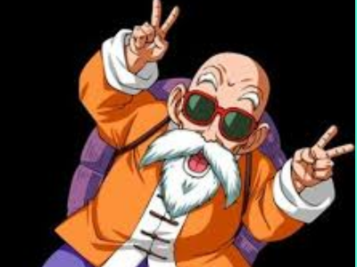

Mestre Kame
Mestre Kame, também conhecido como Kame-Sennin ou Tartaruga Genial, é um personagem emblemático na franquia Dragon Ball, criada por Akira Toriyama. Ele é um mestre de artes marciais lendário e é conhecido por seu estilo de vida excêntrico, sua natureza pervertida e suas habilidades de luta formidáveis. Mestre Kame é apresentado como o mentor inicial de Goku e Kuririn, os primeiros aprendizes a quem ele ensina artes marciais. Ele é retratado como um homem idoso, mas ainda muito poderoso, capaz de realizar feitos incríveis de força e velocidade. Uma de suas técnicas mais famosas é o Kamehameha, uma poderosa onda de energia que se tornou uma marca registrada da série.